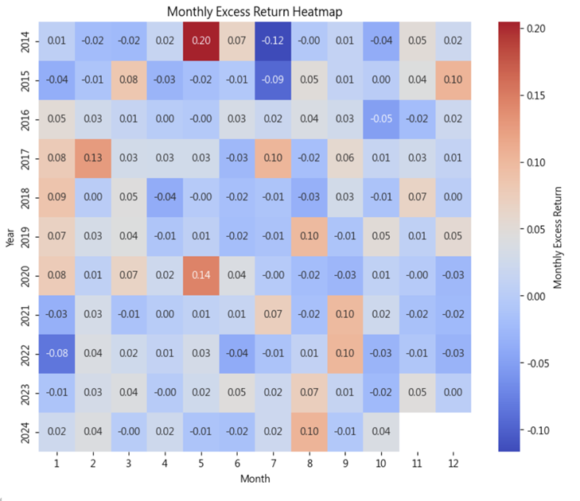

指數增強策略demo
一、研究動機與策略背景
本策略旨在針對台灣市場中市值前百大的上市上櫃股票，運用多因子選股邏輯進行動態資產配置。策略邏輯結合長期穩定的價值指標與短期敏感度高的波動性與流動性因子，在追求高報酬的同時，也提升策略在市場極端情況下的韌性。
二、回測假設與模型設計
資料來源：TEJ 台灣經濟新報資料庫，回測區間為2014年至2024年。
- 滑價模型：Adjusted Price = Price × [1 ± (Price Impact × Volume Share^2)]
- 交易成本：手續費雙邊成交金額 × 0.1425%，證交稅僅賣出時計算。
- 交易限制：若標的漲跌停或停牌，則順延至下一個交易日。
三、策略發想與流程設計
策略聚焦於台灣市值前100大股票，主要以價值因子為核心，輔以盈利、波動、流動性與籌碼因子進行輔助。每月評分並挑選綜合得分最高的10檔股票，等權重持有一個月後再進行調整。
四、因子設計與評分機制
因子包含：價值因子（如PER、PBR）、盈利因子（如ROE、毛利率）、波動因子（如歷史波動率）、流動性因子（如成交金額）、籌碼因子（如法人買賣超）。
每月使用近一年資料評估各因子之Rank IC與IR，依據rank_IC_IR進行加權計分後合成綜合因子，進行股票排序與選股。
五、回測結果與壓力測試
策略回測期間涵蓋2014至2024年，歷經數次市場波動與重大事件，包含中國股市大跌、疫情、升息與地緣政治衝突等。在此期間，策略每月選出10檔標的等權持有，顯示出以下特徵：
- 策略年化報酬率普遍高於0050，尤其在價值因子主導的市場環境中表現尤佳。
- 策略的波動度略高於基準，但在長期下仍能維持穩定的夏普比率與Calmar Ratio。
- 於重大壓力事件期間（如2020年疫情、2021年中國股市波動），策略最大回撤與0050相當，惟後期回升速度與幅度均優於大盤。
- 在震盪市與高通膨環境中（如2022年），策略維持穩健，超額報酬主要來自於價值因子與籌碼因子的穩定貢獻。
六、季節性與超額報酬觀察
根據策略溫度圖觀察，策略於2017年與2023年年初與年末表現明顯較佳，呈現季節性效應。此外在2015、2021與2022年等波動劇烈年度中，策略整體表現仍優於大盤，顯示其具備良好的下行保護能力。
七、總結與未來展望
本策略結合核心價值與多因子邏輯，透過定期再平衡與風險控管，成功實現長期穩健報酬。未來可考慮加入動能或預測模型強化短期因子判斷，亦可針對風險暴露進行動態調整，以增強策略彈性。
因子介紹
策略流程
因子打分指標
因子分析圖
回測結果
季節性分析
